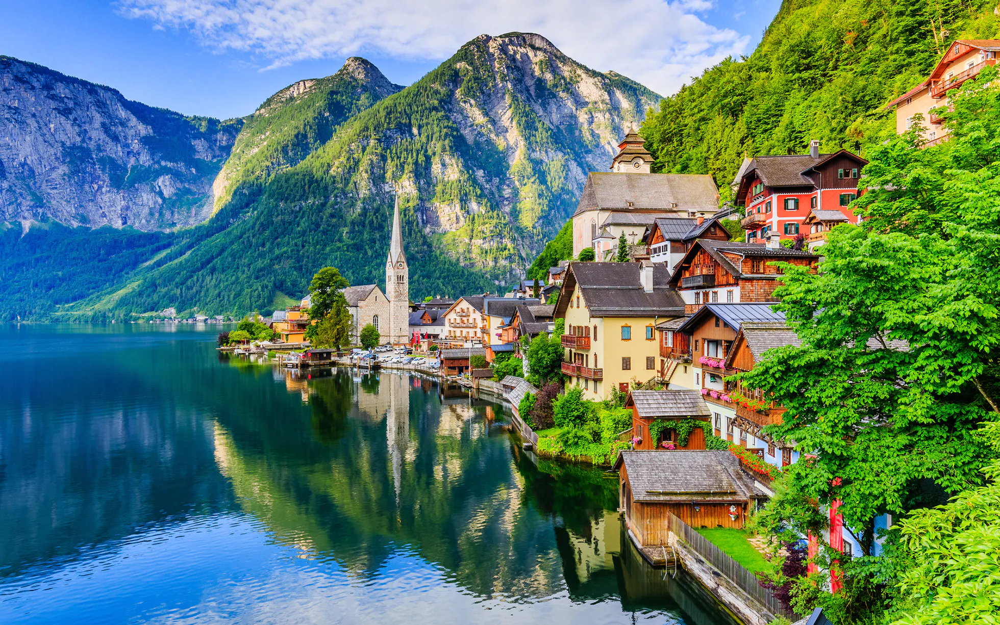

As Ilhas Canárias, um arquipélago espanhol ao largo da costa noroeste da África, são ilhas vulcânicas acidentadas conhecidas por suas praias de areia preta e branca.
Amalfi é uma cidade num deslumbrante cenário natural sob penhascos íngremes na costa sudoeste de Itália.
Gdansk (Danzig em alemão) é uma cidade portuária situada na costa báltica da Polônia.
O TripBooker, a maior plataforma de viagens do mundo, ajuda milhões de viajantes todos os meses a tornar cada viagem a melhor de todas. Pessoas do mundo todo usam o site do TripBooker para acessar mais de 1,6 bilhão de avaliações e opiniões sobre 18,6 milhões de acomodações, restaurantes, experiências, companhias aéreas e cruzeiros. Seja na fase de planejamento ou durante a viagem, o TripBooker é usado para comparar preços baixos de hotéis, voos e cruzeiros, para reservar excursões e atrações badaladas, além de para fazer reservas em ótimos restaurantes.